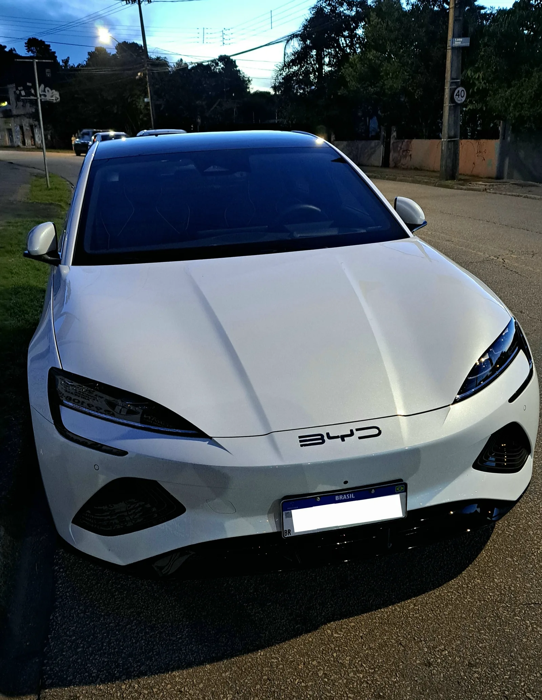
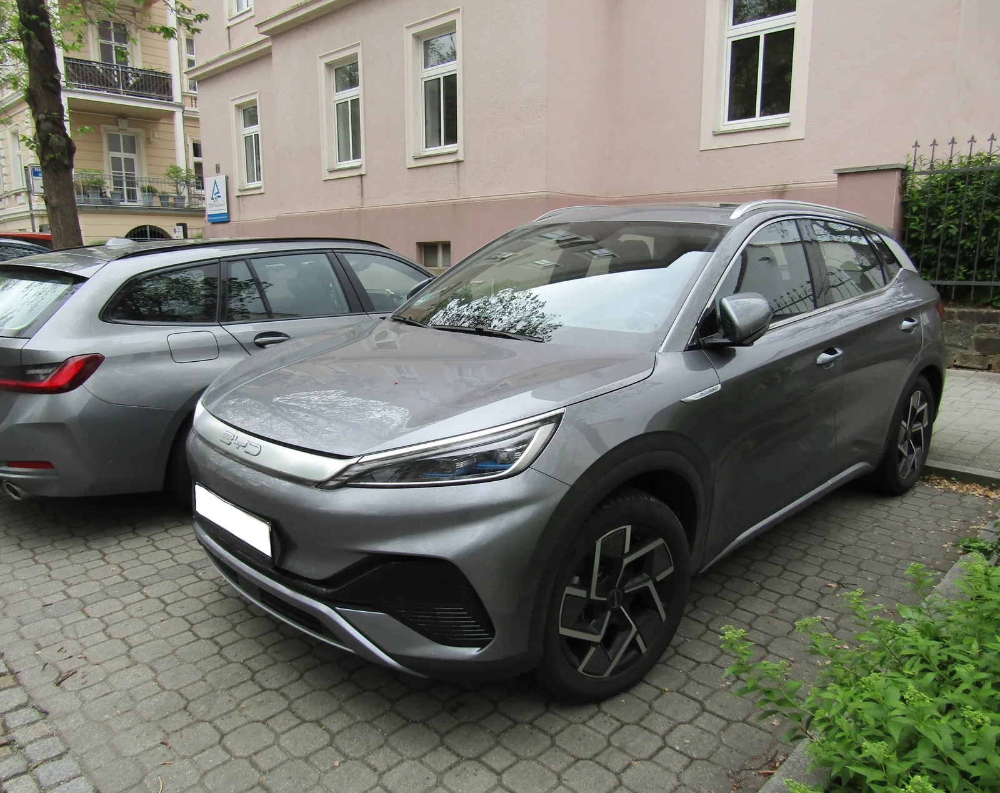
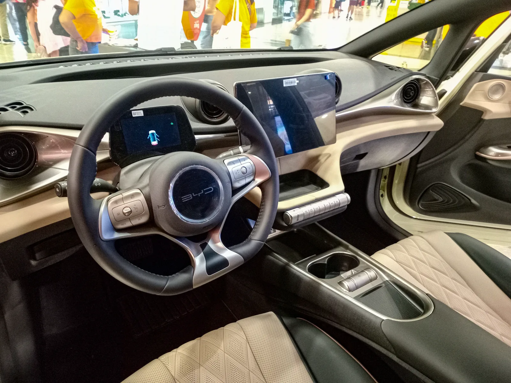
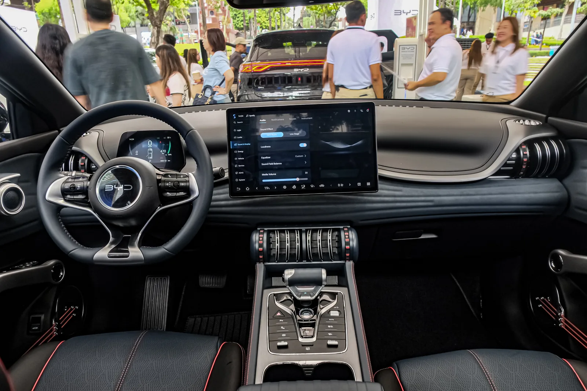

▲ BYD 씰이 브라질 도로에 주차된 모습. 중국 브랜드는 미국을 제외한 대부분의 대형 시장에서 이미 자리를 잡았다 ⓒ Wikimedia Commons
중국산 완성차가 미국 시장 진입을 허용받는다면 어떤 일이 벌어질까. S&P 글로벌에서 지난 7월 분사한 자동차 전문 컨설팅사 모빌리티 글로벌(Mobility Global)이 이 질문에 구체적인 숫자로 답을 내놨다. 미국 차량 예측 부문을 이끄는 피터 네이글(Peter Nagle)에 따르면, 중국 완성차들은 진입 장벽이 풀릴 경우 2038년까지 연간 170만대를 미국에서 팔 수 있다.
물론 이는 '허용된다면'이라는 가정 위에 선 전망치다. 현재 미국은 고율 관세와 커넥티드카 규정으로 중국산 완성차의 직접 수입을 사실상 막아놓은 상태다. 그럼에도 이 숫자가 주목받는 이유는, 유럽과 중남미 등 다른 시장에서 이미 중국 브랜드가 증명해 보인 가격 경쟁력 때문이다.
1. 170만대라는 숫자는 어디서 나왔나

▲ 독일 주택가에 주차된 BYD 아토3. 중국 브랜드는 유럽에서 이미 테슬라와 어깨를 나란히 하는 수준까지 성장했다 ⓒ Wikimedia Commons
이번 전망을 내놓은 모빌리티 글로벌은 원래 S&P 글로벌의 자동차 부문이었다가 2026년 7월 별도 회사로 분사한 곳으로, 오랫동안 글로벌 자동차 산업의 판매·생산 전망 데이터를 다뤄온 컨설팅사다. 이 회사의 미국 차량 예측 부문을 이끄는 피터 네이글은, 중국 완성차가 미국 진입을 허용받는다는 가정 하에 2038년까지 연간 170만대를 판매할 수 있다고 전망했다.
근거로 제시된 논리는 단순하지만 강력하다. "중국 완성차들이 다른 나라에서 판매하는 준중형·중형 크로스오버는 미국 중고차 평균 가격 수준"이라는 것이다. 신차인데 중고차 값이라는 얘기다. 이 가격 경쟁력이 그대로 미국 시장에 이식된다면, 소비자 입장에서 거부할 이유가 많지 않다는 계산이다.
모빌리티 글로벌은 이 진입이 산업 전체에 미칠 영향도 나눠서 추정했다. 중국 완성차의 등장이 연간 약 60만대의 순수 신규 수요를 창출하는 동시에, 기존 경쟁사들의 판매에서 약 100만대를 가져갈 것이라는 계산이다. 즉 170만대 중 상당 부분은 새로 생긴 파이가 아니라, GM·포드·스텔란티스를 비롯한 기존 업체들이 나눠 갖던 몫에서 옮겨가는 물량이라는 뜻이다.
📍 왜 하필 2038년인가
2038년은 모빌리티 글로벌이 장기 판매 전망을 산출하는 통상적인 기준 연도로, 관세·규제 완화가 이뤄진다는 가정 아래 진입 이후 시장 점유율이 안정화되는 시점을 잡은 것으로 풀이된다. 다시 말해 당장 몇 년 안에 벌어질 일이라기보다, 규제가 풀린다는 전제 자체가 성립해야 하는 장기 시나리오라는 점을 함께 봐야 한다.
2. 지금 미국 문을 막고 있는 것들
중국산 완성차가 당장 미국 도로를 달리지 못하는 이유는 이미 카프리즘이 다룬 바 있다. 미국 자동차혁신연합(GM·포드·BMW·벤츠·혼다·토요타 등 참여)이 의회에 중국산 커넥티드 차량의 판매·수입·제조 영구 금지를 요청한 배경에는, 상무부가 이미 확정해 둔 커넥티드카 공급망 규정이 있다.
| 구분 | 내용 |
|---|---|
| 관세 | 고율 관세로 중국발 직접 수입은 사실상 채산성 없음 |
| 커넥티드카 규정(소프트웨어) | 2027년형(MY2027) 차량부터 중·러 관련 소프트웨어 탑재 차량 판매·수입 금지 |
| 커넥티드카 규정(하드웨어) | 2030년형(MY2030) 차량부터 관련 하드웨어까지 확대 적용 |
| 입법 추진 | Connected Vehicle Security Act of 2026(상원 S.4429/하원 H.R.8730) 등으로 행정규칙을 법률로 영구화 추진 중 |
| 우회 가능성 | 멕시코 등 북미 현지 생산을 통한 진입은 이르면 2029년경부터 가능할 것으로 관측 |
미국 완성차 업계가 의회에 요청한 영구 금지 조치의 구체적 내용은 카프리즘의 이전 기사에서 확인할 수 있다. "중국 지분 15%면 못 판다" 기사 바로가기
모빌리티 글로벌은 이 장벽이 가까운 시일 내에 풀릴 가능성을 "낮음에서 중간(low-to-moderate)" 정도로 평가했다. 즉 170만대 전망은 확정된 미래가 아니라, 정책이 바뀐다는 조건이 충족될 때만 성립하는 시나리오라는 단서가 붙어 있다.
3. 유럽·중남미가 보여준 것 — 가격이 전부는 아니지만

▲ 대형 듀얼 디스플레이를 갖춘 BYD 차량 실내. 중국 브랜드는 가격 대비 사양에서 강한 경쟁력을 보여왔다 ⓒ Wikimedia Commons
미국 시장 잠재력을 가늠하는 근거로 흔히 거론되는 것이 BYD의 다른 지역 성과다. 유럽에서 BYD는 2026년 상반기 EU·EFTA·영국을 합친 시장에서 등록 대수 약 17만 4144대를 기록하며, 오랫동안 유럽 전기차 시장을 주도해온 테슬라(약 17만 351대)를 근소하게 앞질렀다. 시장 점유율로 보면 두 브랜드 모두 2.4%로 동률을 이뤘는데, 1년 전 BYD의 점유율이 1.0%에 불과했던 것과 비교하면 극적인 반전이다.
중남미에서도 흐름은 비슷하다. 브라질에서는 BYD가 세단·SUV 라인업을 빠르게 늘리며 도심 곳곳에서 눈에 띄는 존재가 됐고, 멕시코에서도 현지 공장 설립을 저울질할 만큼 시장을 키워왔다(다만 멕시코 공장 계획은 관세 불확실성 속에 추진과 보류를 반복하고 있다). 동남아시아 역시 태국 등을 중심으로 BYD 매장과 체험 공간이 빠르게 늘어난 지역이다.
📍 미국은 다르다는 반론도 있다
다만 이 성과를 그대로 미국에 대입하기는 어렵다는 시각도 있다. 유럽·중남미·동남아 시장은 소형·중형 세그먼트 비중이 높고 픽업트럭 문화가 약한 반면, 미국은 대형 SUV·픽업트럭 선호도가 매우 높은 시장이다. 중국 브랜드가 아직 이 세그먼트에서 강한 라인업을 갖추지 못했다는 점은 변수로 남는다.
4. GM·포드·스텔란티스가 두려워하는 이유

▲ 동남아시아 쇼핑몰에 마련된 BYD 체험존. 중국 브랜드는 동남아 시장에서도 빠르게 점유율을 늘려왔다 ⓒ Wikimedia Commons
모빌리티 글로벌의 추정대로 기존 경쟁사 판매의 약 100만대가 잠식당한다면, 그 충격은 특정 업체에 집중될 가능성이 크다. GM·포드·스텔란티스는 대중적인 준중형·중형 세그먼트에서 중국 브랜드와 가격대가 정면으로 겹치는 데다, 최근 몇 년간 전동화 전환 과정에서 수익성 압박을 동시에 받아온 상태다. 여기에 저가 경쟁자까지 가세하면 가격 방어를 위한 마진 축소가 불가피해진다.
실제로 6개 주요 업계 단체는 2026년 9월 17일 트럼프 대통령에게 공동 서한을 보내, 현지 생산을 포함한 모든 경로에서 중국 완성차를 미국 시장 밖에 묶어둘 것을 요청했다. 자동차혁신연합의 의회 대상 입법 요청과 별도로, 백악관을 직접 겨냥한 로비가 이어지고 있는 셈이다.
✅ 미국 업계가 특히 경계하는 지점
· 가격 — 중국산 준중형 크로스오버가 미국 중고차 평균가 수준으로 책정될 경우 정면 충돌
· 사양 — 대형 듀얼 디스플레이 등 가격 대비 첨단 사양에서 이미 강점을 보여옴
· 우회 생산 — 관세를 피해 멕시코 등 북미 현지에서 생산하면 관세 장벽 자체가 무력화됨
· 보조금 — 중국 정부 보조금을 발판 삼은 가격 구조라는 비판이 여전히 유효
5. 실제로 문이 열릴까 — 트럼프-시진핑 변수
이 시나리오가 현실이 되려면 결국 정치적 결정이 필요하다. 트럼프 대통령은 중국 완성차가 미국 내 공장을 짓고 미국인 노동자를 고용하는 조건이라면 진입에 열려 있다는 입장을 보여왔다. 반대로 멕시코 등 제3국 생산을 통한 우회 진입에는 부정적인 태도를 유지하고 있다.
공교롭게도 이 전망이 나온 시점은 시진핑 중국 국가주석이 2026년 9월 23일 워싱턴을 국빈 방문한 직후다. 두 정상은 지난 5월 베이징 정상회담에 이어 5개월 만에 다시 마주 앉았고, 무역·인공지능·대만·희토류 등이 주요 의제로 다뤄졌다. 다만 이번 워싱턴 회담에서 큰 폭의 새 무역 합의보다는, 2025년 10월 부산에서 합의한 무역 휴전(관세 유예)을 연장하는 수준의 절충이 예상된다는 관측이 우세하다. 자동차 관세·규제가 이번 회담에서 직접 완화될 가능성은 낮다는 뜻이다.
📍 정치적 시간표와 산업의 시간표는 다르다
설령 트럼프 대통령이 중국 완성차의 미국 내 생산을 조건부로 허용하더라도, 공장 부지 선정부터 가동까지는 통상 수년 단위가 걸린다. 모빌리티 글로벌이 2038년이라는 먼 시점을 기준으로 잡은 것도, 정치적 결정과 실제 산업 현실 사이의 이 시차를 반영한 것으로 볼 수 있다.
6. 요약
모빌리티 글로벌(옛 S&P 글로벌 모빌리티)은 중국 완성차의 미국 진입이 허용될 경우 2038년까지 연간 170만대를 판매할 수 있다고 전망했다. 이 중 약 60만대는 신규 수요, 약 100만대는 기존 경쟁사에서 옮겨가는 물량으로 추정된다.
현재 미국은 고율 관세와 상무부의 커넥티드카 규정(2027년형부터 소프트웨어, 2030년형부터 하드웨어 배제)으로 중국산 완성차를 사실상 막아두고 있으며, 업계는 이를 법률로 영구화하려 하고 있다. 유럽에서 BYD가 테슬라와 등록 대수를 나란히 할 만큼 성장했고, 브라질·동남아에서도 존재감을 키웠다는 점이 이 전망에 힘을 싣는 근거로 제시된다.
다만 모빌리티 글로벌 스스로도 규제 완화 가능성을 "낮음~중간"으로 평가했고, 트럼프-시진핑 정상회담에서도 자동차 관세가 직접 완화될 조짐은 보이지 않는다. 170만대라는 숫자는 확정된 예측이 아니라, 문이 열린다면 벌어질 수 있는 최대치에 가까운 시나리오로 읽는 것이 정확하다.